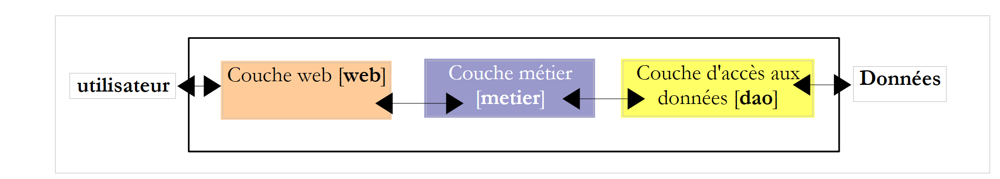

1. 简介
本文档的PDF版本可在此处获取 |HERE|。
本文档中的示例可<在此处>查看。
本文旨在介绍使用Servlet和JSP页面进行Java MVC Web编程的基础知识。阅读本文并测试示例后，读者应能掌握Java Web编程的基本概念。
若要充分理解本文提供的练习，文档[《基于Servlet和JSP页面的Java Web编程入门（2002）》]可能会有所帮助。某些章节开头提供的阅读建议即指该文章。下文将该文档简称为[ref1]。
本文档可通过多种方式使用：
- 安装工具，从本文档的网站下载代码，并运行建议的测试。初学者采用这种方法将一无所获。然而，如果经验丰富的开发人员仅对测试 Eclipse/WTP 开发环境感兴趣，则可以这样做。
- 安装工具，按照本文操作，并通过复制粘贴本文内容来执行建议的测试。您无需阅读文献[ref1]。通过这种方式，您将开始掌握Web开发的基础知识，但某些要点仍会显得模糊或难以理解。如果您希望快速入门，并计划在日后编写个人应用程序时再深入钻研（届时可能使用[ref1]以外的参考文献），这是一种可行的方法。
- 与方法2相同，但在被建议时阅读[ref1]。这种较慢的方法会消除方法2中的一些模糊和神秘之处，但无法为你做好独立工作的准备，因为通过复制粘贴获得的代码未必能被完全理解。
- 我们采用与方法3相同的方式，但所有代码都由自己手动输入。这显然耗时更长且更为繁琐，但效果极佳。为了输入代码，你必须阅读它，这要求你专注于代码本身，进而开始培养对代码的理解。这种手动重写很少能完全避免错误。这些错误会被Eclipse的各种工具标记出来，从而促使读者对所写的代码产生疑问，进而加深理解。
本文档整合了2005年1月发表的一篇题为《使用Eclipse和Tomcat进行Java Web开发》的文章中的大部分内容，该文章可通过以下网址查阅：[http://tahe.developpez.com/java/eclipse/]。本文档的贡献如下：
- 使用 Eclipse WTP 插件进行 Web 应用程序开发，
- 对文档进行了重组，重点突出了三层MVC架构（原文档中对此仅略有提及），
- 提供了一个使用DBMS数据的3层MVC Web应用程序示例。
三层Web应用程序具有以下结构：
 |
- [DAO] 层负责数据访问，通常处理数据库管理系统（DBMS）中的持久化数据。但这也可能是来自传感器、网络等来源的数据。
- [业务逻辑]层实现了应用程序的“业务逻辑”算法。该层与任何形式的用户界面均相互独立。因此，它必须能够与控制台界面、Web 界面或富客户端界面兼容。因此，它必须能够在 Web 界面之外进行测试，特别是通过控制台界面进行测试。这通常是架构中最稳定的层。 即使用户界面或应用程序运行所需数据的访问方式发生改变，该层也不会随之改变。
- [Web]层，即允许用户控制应用程序并从中获取信息的Web界面。
文章 [http://tahe.developpez.com/java/eclipse/] 仅提供了仅限于 [Web] 层的 Web 应用程序示例。在此，我们将提供一个同时使用这三个层的示例。